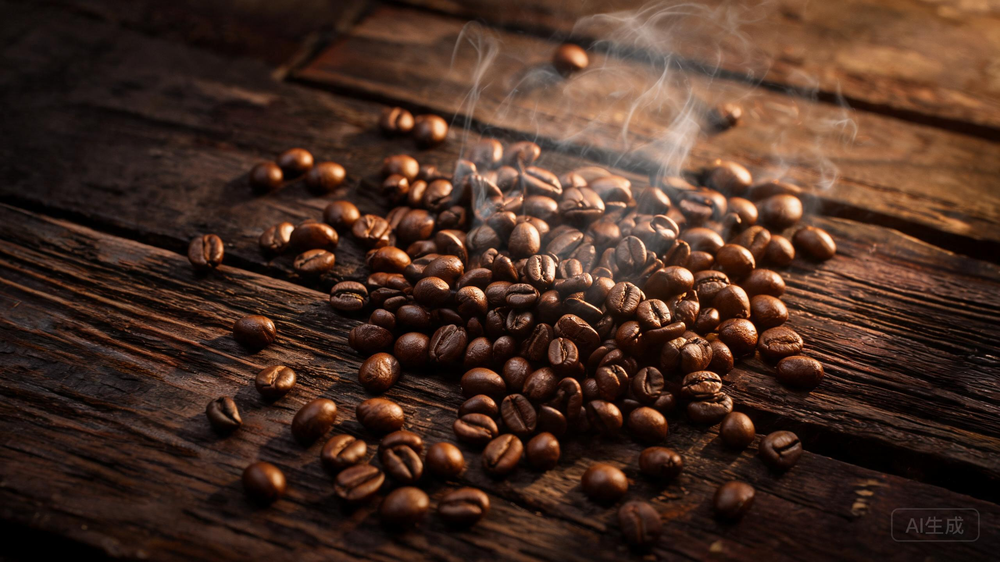
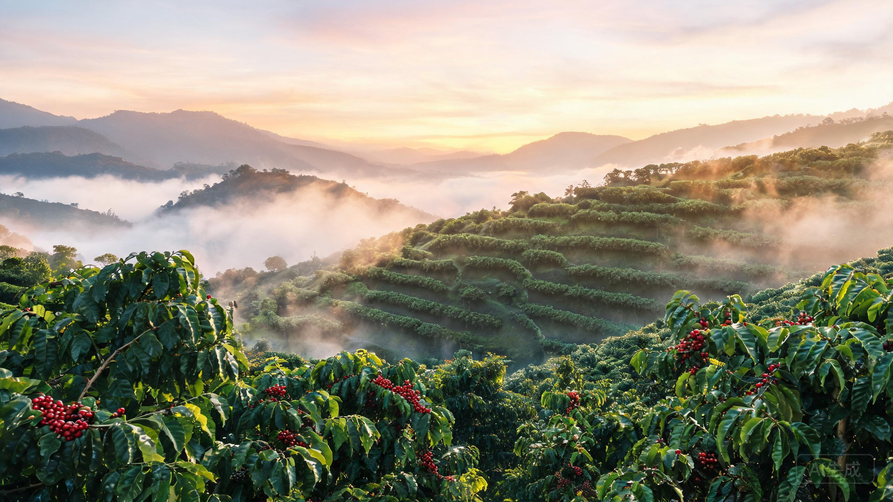
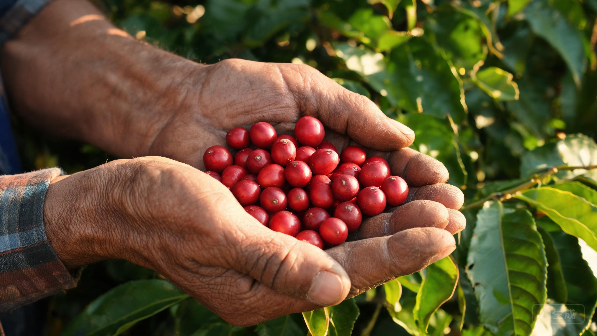
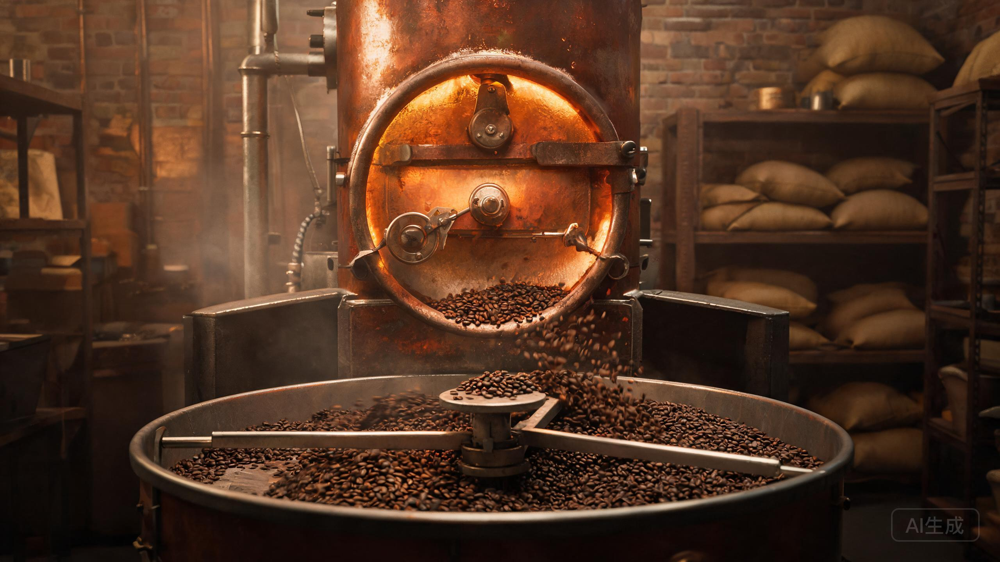
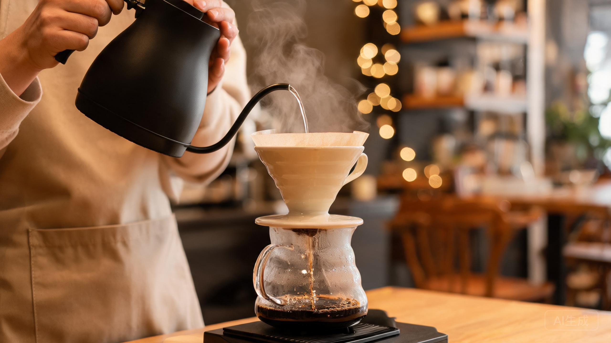

一杯咖啡的背后，是跨越千年的历史、三大原生豆种、数十个产区的风土，以及从种植、烘焙、研磨到萃取的完整工艺链条。这里是关于咖啡的一切。
从埃塞俄比亚高原的传说，到遍布全球的咖啡馆文化，咖啡用一千年完成了从提神药果到世界第二大饮品（仅次于水）的旅程。
传说埃塞俄比亚牧羊人卡尔迪发现山羊吃了一种红色浆果后异常兴奋，咖啡由此被人类认识。虽然故事无法考证，但埃塞俄比亚被公认为咖啡的基因故乡。
有文字记载的最早饮用来自也门。苏菲派修士夜间修行时煮饮咖啡提神，摩卡港由此成为历史上第一个咖啡贸易中心。
君士坦丁堡（今伊斯坦布尔）出现公认的早期咖啡馆，咖啡开始从宗教仪式走向世俗社交生活。
伦敦第一家咖啡馆开业，被称为"便士大学"——一便士入场即可参与思想交锋。咖啡馆随后席卷巴黎、维也纳，成为启蒙运动的温床。
葡萄牙军官将咖啡苗带入巴西。凭借得天独厚的气候，巴西在两百年内崛起为世界第一大生产国并保持至今。
日裔化学家加藤サトリ发明速溶咖啡工艺；同年米兰工程师贝泽拉申请意式浓缩机专利——咖啡的"快时代"开启。
第一波：速溶普及；第二波：星巴克（1971 年创立）推动意式咖啡全球化与"第三空间"；第三波：精品咖啡运动将咖啡视为风土表达，像品鉴葡萄酒一样品鉴咖啡。
植物学上，咖啡属（Coffea）已确认的物种超过 130 个，但被商业化种植的主要只有三种：阿拉比卡、罗布斯塔与利比里卡。我们每天喝的咖啡，几乎都来自前两者。
风味之王。生长在海拔 600–2200 米的高地，酸质明亮、层次丰富，带有花果与焦糖调性。咖啡因较低（约 1.2%–1.5%），但娇贵怕冷怕虫，种植成本高。精品咖啡几乎全是阿拉比卡。
刚强务实。低海拔（0–800 米）即可生长，抗病虫害能力强、产量高。咖啡因约为阿拉比卡的两倍（2.2%–2.7%），口感浓烈、苦感厚重、油脂丰富，是速溶咖啡与意式拼配的主力。越南是全球最大罗豆产地。
稀有小众。豆形硕大不规则，风味独特——烟熏、木质调中带菠萝蜜般的热带果香，爱恨分明。主产菲律宾与马来西亚，是当地"巴图咖啡"的灵魂。近年因气候变化研究而重新受到关注。
咖啡只生长在赤道两侧南北纬 25° 之间的"咖啡带"（Coffee Belt）。海拔、土壤、降雨与处理法共同塑造了每个产区独一无二的风味指纹。
咖啡的基因库，耶加雪菲与西达摩名扬世界。水洗豆清透优雅，日晒豆莓果炸裂。
SL28/SL34 品种 + 双重水洗发酵，造就了世界公认最"酸得高级"的咖啡。
世界第一大生产国（约占全球 1/3）。半日晒处理带来平衡的甜感，是意式拼配的基豆之王。
安第斯山脉的火山土壤 + 全年两季收获。"均衡"是哥伦比亚的金字招牌，单品与拼配皆宜。
翡翠庄园的瑰夏在此一战封神，2023 年拍卖价高达每公斤 1 万美元以上，是精品咖啡的圣杯。
蜜处理（Honey Process）的发源地之一，全国法律禁止种植罗布斯塔，专注精品阿拉比卡。
苏门答腊曼特宁以湿刨法处理，低酸厚重、药草与泥土气息独特。猫屎咖啡（Kopi Luwak）亦源于此。
普洱与保山产区已有百余年种植史，卡蒂姆为主力品种，近年水洗精品化转型迅猛，国际赛事屡获高分。

按年产量排名（单位：万吨生豆，近年平均）。前四名贡献了全球约 70% 的产量。
消费量角度：卢森堡、芬兰、瑞典人均年饮用量全球前三（芬兰人均每天约 4–5 杯）；总量上美国是全球最大咖啡消费国，中国则是增长最快的咖啡市场。
一颗咖啡种子从入土到变成您杯中的咖啡，至少需要 3–4 年。一杯咖啡的背后，是跨越数个年度的等待。
种子在苗圃发芽，长成 30–40 厘米的幼苗后移栽至田间。
幼树持续生长但未结果，需遮荫、施肥、修枝，是纯粹的投入期。
首次开花——白色小花如茉莉芬芳。花后 6–9 个月果实由绿转红，成为"咖啡樱桃"。
手工或机器采收后，经水洗 / 日晒 / 蜜处理去除果肉，干燥至含水率 11% 左右。
进入盛产阶段，一棵树的黄金产出期约 15 年，全生命周期约 20–30 年。

烘焙让生豆中的糖类与氨基酸发生美拉德反应，产生 1000 多种芳香物质。烘得越浅越保留产区个性（酸与花果香），烘得越深越走向焦糖化（苦与醇厚）。
一爆初密集即下豆。酸质明亮活泼，柑橘、花香与产地风味最完整，适合手冲品鉴。咖啡因保留相对更多。
一爆结束前后。酸甜趋于平衡，出现焦糖与坚果调，是风味接受度最高的烘焙度，美式滴滤与手冲皆宜。
临近二爆。苦甜交织，黑巧克力与烤面包气息显现，醇厚度上升，奶咖与意式浓缩的经典区间。
二爆密集后。烟熏、炭烧与苦甜主导，产地个性几乎消失，表面油亮。法式 / 意式深焙，传统拿铁与速溶常用。

研磨度决定水与咖啡粉的接触面积：越细萃取越快越充分，过细则过萃发苦发涩；越粗萃取越慢，过粗则萃取不足，酸寡无味。研磨度必须与冲煮方式匹配。咖啡粉接触空气后 15 分钟内香气大幅流失，现磨是风味保鲜的第一原则。
| 研磨度 | 颗粒质感 | 粒径参考 | 适配冲煮方式 | 萃取时长 |
|---|---|---|---|---|
| 极粗 | 碎胡椒粒 | 1300–1600 μm | 冷萃、冰滴 | 12–24 小时 |
| 粗研磨 | 粗海盐 | 900–1300 μm | 法压壶、杯测 | 4 分钟左右 |
| 中粗 | 粗砂糖 | 700–900 μm | Chemex、聪明杯 | 3–4 分钟 |
| 中度 | 白砂糖 / 细沙 | 500–700 μm | 滴滤机、V60 手冲 | 2–3 分钟 |
| 中细 | 精制盐 | 300–500 μm | 摩卡壶、爱乐压 | 1–2 分钟 |
| 细研磨 | 面粉前段触感 | 200–300 μm | 意式浓缩机 | 25–30 秒 |
| 极细 | 面粉 / 粉末 | <200 μm | 土耳其壶（连渣煮） | 短时煮沸 |
所有冲煮的本质都是同一件事：让热水以合适的温度、时间与压力，把咖啡粉中 18%–22% 的可溶性物质恰到好处地带出来（金杯萃取率）。方式不同，风味迥异。
高压热水瞬间穿透细粉，萃出浓缩液与金黄色油脂（Crema）。是一切意式咖啡的灵魂基底。
注水手法与水流路径全由人掌控，最能展现单一产区豆的层次与干净度，精品店标配。
完全浸泡式萃取 + 金属滤网不过滤油脂，口感厚重圆润，操作零门槛，家用最友好。
浸泡 + 轻压力 hybrid 设计，玩法极多（正压/反压/冰酿），世界爱乐压大赛每年诞生无数冠军配方。
意国家庭百年标配。蒸汽压力将热水推过咖啡粉，得到接近浓缩的浓烈口感，做奶咖性价比之王。
低温长时间慢萃取，几乎不带出苦与酸的物质，口感甘甜顺滑，咖啡因反而更高，加冰直饮或兑奶皆可。
利用蒸汽压与真空原理让水上下循环，如实验室般优雅。出品干净、香气集中，观赏性拉满。
人类最古老的冲煮法。铜壶慢煮出泡沫层，连粉倒入杯中静置后饮用，2013 年被列入联合国非遗名录。

意式菜单上所有饮品，本质都是「浓缩 : 热水 : 奶 : 奶泡」四种元素的比例游戏。点击切换，看每杯的结构剖面。
直观对比常见饮品的咖啡因含量（毫克 / 标准杯）。冰美式不一定是"最猛"的——冷萃往往更高。
咖啡是研究最充分的饮品之一。对多数健康成人而言，适量饮用利大于弊——但"适量"与"个体差异"是两个关键词。
烘焙后的咖啡豆不是越新鲜越好，也绝非能永久保存。掌握养豆与密封避光的原则，每一杯都值得。
烘焙后豆子持续释放 CO₂，浅烘养豆 7–14 天、深烘 3–7 天风味进入峰值窗口。
氧气、光照、高温、湿气是风味四大杀手。用带单向排气阀的密封罐，置于阴凉橱柜。
日常饮用不建议放冷藏——反复取用易吸潮串味。需囤豆可分小袋密封冷冻，喝前整袋回温再开封。
整豆：烘焙后 1–2 个月内风味最佳；磨粉后：15 分钟起香气快速流失，建议 1 周内喝完——最好现磨。